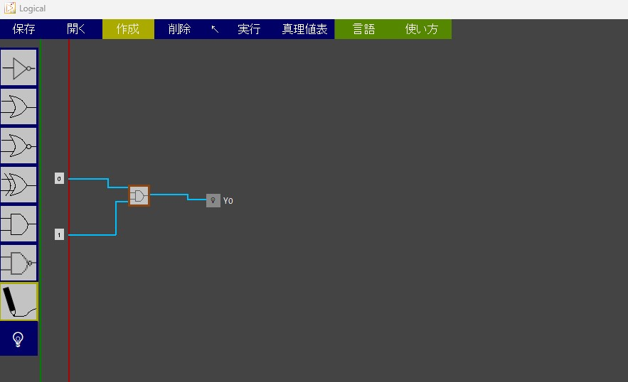
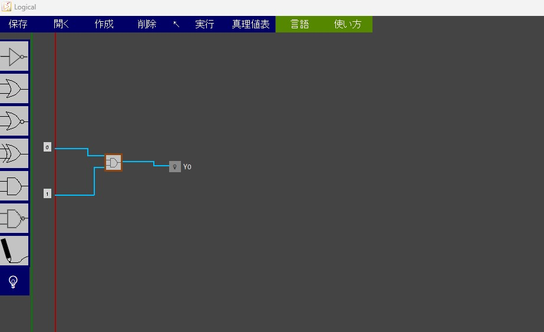
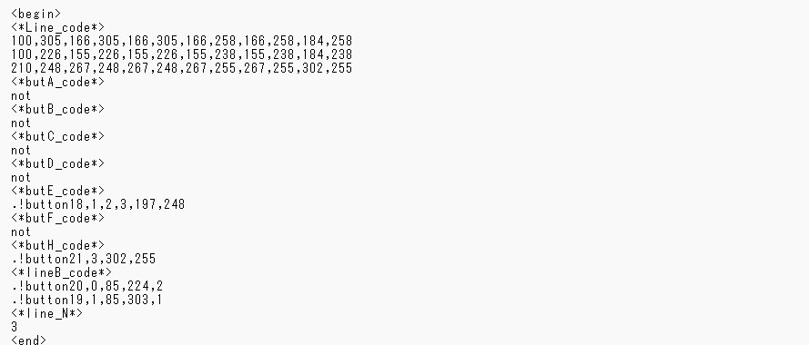

オリジナルのファイルを出力しよう
2025/0201 🖊たびと
はじめに
これはteam411 Advent Calendar 2024 22日目の記事です。昨日？は小林翔太郎さんのFirebaseことはじめ」でした。Firebase面白そうですね。私も使えるようになりたいです。
ところで.....
あれ、なんか時空のゆがみでしょうか。12月22日の記事のはずなのですが、執筆日が2月です。世の中には不思議なこともあるものですね。当初は「旧正月を基準にしていた」と言い訳しようと思っていたのですが、とっくに通用しなくなってしまったためこの件には触れないでおきます。
本題へ、
さて、いつもはスポンサーの紹介をするところなのですが今日は、公開から3年目を迎える論理回路シミュレーションソフト「Logical」について話していきます。これは僕が高校1年生の時にPythonを独学で学んだその集大成として制作したものです。もともとマイクラ好きだった私がパソコンで論理回路の動き確認できたらいいなって思ったのが始まりですね、一年前の更新で新たなソフト「Logical」として再スタートし、作った論理回路の真理値表も出力できるようになりました。 当初は、「教育業界」で使われると嬉しいなと思っていました。公開してからしばらくたったころとある会社さんからお声をおかけいただいたのですが、なにせ高校生、何もわからず断ってしまいました。それ以来何もないですね(´;ω;｀)
開発期間約1年半
当時まだAIにプログラミングさせるという文化は（おそらく）なかったとおもいます。そのためわからないことはその都度調べ、とても時間をかけて作成しました。なかでも面白い機能は論理回路をファイルとして保存できるところです。
保存機能
さあいよいよ本題の「本題」です。まずソフトで次のような論理回路を作ってみます。
これをテキストファイルとして保存して、いったんソフトを再起動します。
そして、先ほどのテキストファイルを読み込むと....おや、既視感ある論理回路が出てきましたね。そうです。このようにテキストファイルとして論理回路を保存することができます。ところでみなさんこのテキストファイルの中身気になりませんか？（気になりますよね？）メモ帳で開いてみると.....
うわ、変な文字列がいっぱい並んでますね。でも実はこれはあの論理回路を組み立てるための重要な情報です。たとえば<*Line_code*>という項目は、信号を伝える導線一本を構成する点の位置が記載されています。ソフトに読み込ませると、ソフトはこの暗号を解読し、論理回路を復元します。
保存用の言語を考える
ファイルの中身は独自の表記で書かれていましたね。これはある意味新しい言語を用意してると言ってもいいかもしれません。なにかのデータを保存したいなら、どのような形式で保存するのか考えましょう。私がどのような点を意識して考えたか紹介します。
・開始と終了の合図
開始と終了の合図は、読み込ませたファイルが間違ったものではないか確認する上で重要です。間違ったファイルを読み込むことはソフトの誤作動につながるだけではなく、たとえば選択したファイルを書き換えるようなプログラムがある場合、関係のないファイルを壊してしまう可能性があります。
・タグで分類
どこに何が書かれているのかということを識別するために、各項目に<*Line_code*>のようなタグを準備すると、ファイルを読み込む際に「この次からその情報かかれてるんだな」っとわかるのでうれしいです。
書き込む文字列の準備
今回は具体的な作り方は取り上げませんが「Logical」を例に挙げて紹介します。「Logical」では保存ボタンが押されると、論理回路から「a」という文字列変数が生成されます。中身は次の通りです。
print(repr(a))
#出力される文字列↓
<begin>\n<*Line_code*>\n100,324,150,324,150,324,150,288,150,288,197,288\n100,257,192,257,192,257,192,197,192,197,148,197,148,197,148,268,148,268,197,268\n223,278,300,278,300,278,300,270,300,270,357,270\n<*butA_code*>\nnot\n<*butB_code*>\nnot\n<*butC_code*>\nnot\n<*butD_code*>\nnot\n<*butE_code*>\n.!button18,1,2,3,210,278\n<*butF_code*>\nnot\n<*butH_code*>\n.!button21,3,357,270\n<*lineB_code*>\n.!button20,0,85,255,2\n.!button19,1,85,322,1\n<*line_N*>\n3\n<end>
ただ謎の文字列が並んでいるだけなので簡単に解説すると、文字列中にある「￥n」あるいは「\n」というのは改行を表すもので、そこから先が次の行に書かれます。それが表示されるようにあえてprint(repr(a))としていますが、実際にファイル内に書き込まれる文字列はprint(a)とするとわかります。
<begin>
<*Line_code*>
100,324,150,324,150,324,150,288,150,288,197,288
100,257,192,257,192,257,192,197,192,197,148,197,148,197,148,268,148,268,197,268
223,278,300,278,300,278,300,270,300,270,357,270
<*butA_code*>
not
<*butB_code*>
not
<*butC_code*>
not
<*butD_code*>
not
<*butE_code*>
.!button18,1,2,3,210,278
<*butF_code*>
not
<*butH_code*>
.!button19,3,357,270
<*lineB_code*>
.!button20,0,85,253,2
.!button21,1,85,320,1
<*line_N*>
3
<end>
これで書き込む文字列を格納した変数ができました。次はこれを実際にファイルに書き込みます。
ファイルに書き込む
ファイルに書き込む処理は次のコードで行うことができます。
f_type = [('logic-circuit', '*.lgcr')]
ret = tk.filedialog.asksaveasfilename(initialfile="work",defaultextension='lgcr', filetypes=f_type,title='file dialog test')
if ret:
with open(ret, "w", encoding="utf_8") as f:
len = f.write(a)
まず、１行目はファイルの拡張子を設定できます。たとえば、[('Text', '*.txt')]とすれば、見慣れたテキストファイルにすることもできますし、[('logic-circuit', '*.lgcr')]のようにすれば、独自の拡張子のファイルも書き出すことができます（昨日知りました）。2、3行目は保存先のパスを取得するコードです。これを実行するとファイルを保存するときの見慣れたウィンドウが立ち上がります。ここで選択した保存先のパスが「ret」に格納されます。ここで各項目の意味を紹介します。
・initialfile 拡張子の前の部分のデフォルトの文字列
・defaultextension デフォルトの拡張子
・filetypes 選べる拡張子（１行目に記述したもの）
・title 保存先を選択するウィンドウのタイトル部分の文字列
さて、5行目はファイルが選択された（retがパスを持っている）かどうか確認しています。もしも選択されていなければif文の中身が実行されない（はずです）。
6、7行目はファイルを生成するプログラムです。retは先ほど取得した保存先までのパスです。もしも保存先に同じ名前のファイルが存在する場合上書きされます。f.write(a)のaとは先ほど準備した文字列が格納された変数です。
ファイルから読み込む
ファイルから読み込む処理は次のコードで行えます。
typ = [('logic-circuit', '*.lgcr'), ('Text', '*.txt')]
fle =tk.filedialog.askopenfilename(filetypes=typ, initialdir=dir)
with open(fle, "r", encoding="utf_8") as f:
data=f.read().split("\n")
1行目は先ほどと同様に読み込むことのできる形式を指定できます。さきほどのときもそうなのですが、複数選択したい場合はこのコードのように記述すればよいです。なぜテキストファイルが読み込めるようになっているのかというと、現在公開している「Logical」のバージョンではテキストファイルが出力されます。
つまり、いつになるかわかりませんが、.lgcrで出力されるこの新しいバージョンが公開された際に、以前までのバージョンのものは読み込めなくなってしまいます（拡張子のところを無理やり変更すればできます）。ソフトを公開する上でやはりこのような事に気を配るのは重要なことかなと勝手に思ってます。
さて、2行目はあの見慣れたどのファイルを開きますか？というウィンドウを立ち上げるコードです。先ほどと同様に選択したファイルのパスがfleに格納されます。
3、4行目は実際に読み込むコードです。.split("￥n")とは、改行（￥n）で区切って配列にしてくださいと言う意味です。つまり、data変数にはファイルの中身が1行ずつ格納されています。
実際に先ほどの変数aをファイルに書き込んで、その後読み込んだ時の配列dataは次のようになります。
print(data)
#出力されたもの↓
['<begin>', '<*Line_code*>', '100,324,150,324,150,324,150,288,150,288,197,288', '100,257,192,257,192,257,192,197,192,197,148,197,148,197,148,268,148,268,197,268', '223,278,300,278,300,278,300,270,300,270,357,270', '<*butA_code*>', 'not', '<*butB_code*>', 'not', '<*butC_code*>', 'not', '<*butD_code*>', 'not', '<*butE_code*>', '.!button18,1,2,3,210,278', '<*butF_code*>', 'not', '<*butH_code*>', '.!button19,3,357,270', '<*lineB_code*>', '.!button20,0,85,253,2', '.!button21,1,85,320,1', '<*line_N*>', '3', '<end>']
データの復元
ここは個人個人によるため詳しい説明を省きますが、さきほど取得できたファイルの中身を1行ずつ格納した配列dataからfor文等で実際に取り出してデータを復元していく処理が必要となります。
まとめ
雑な説明となってしまいましたが、ファイルを書き出したり読み込んだりする方法を紹介しました。この方法を知っておくとたとえばcsvファイルを出力したり、エクセルファイルを出力したりということも可能です。Pythonでなにかソフトを作ってみるという機会は少ないかもしれませんが。ぜひご参照ください。